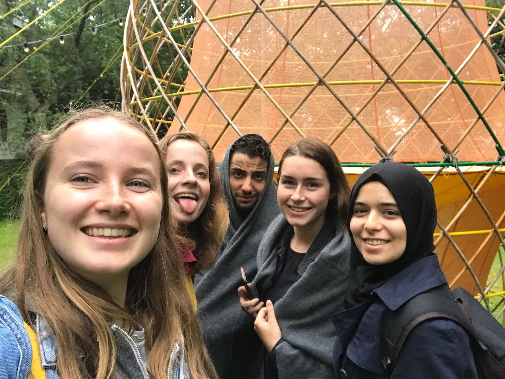
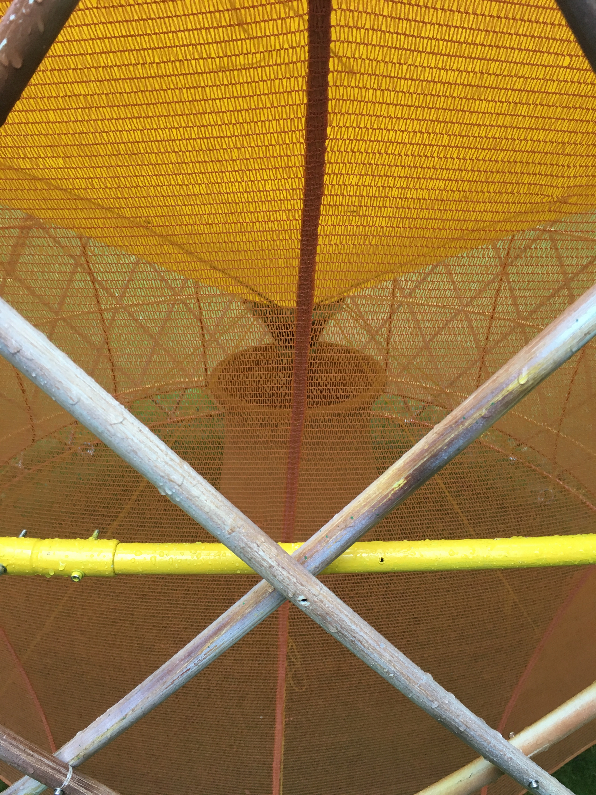
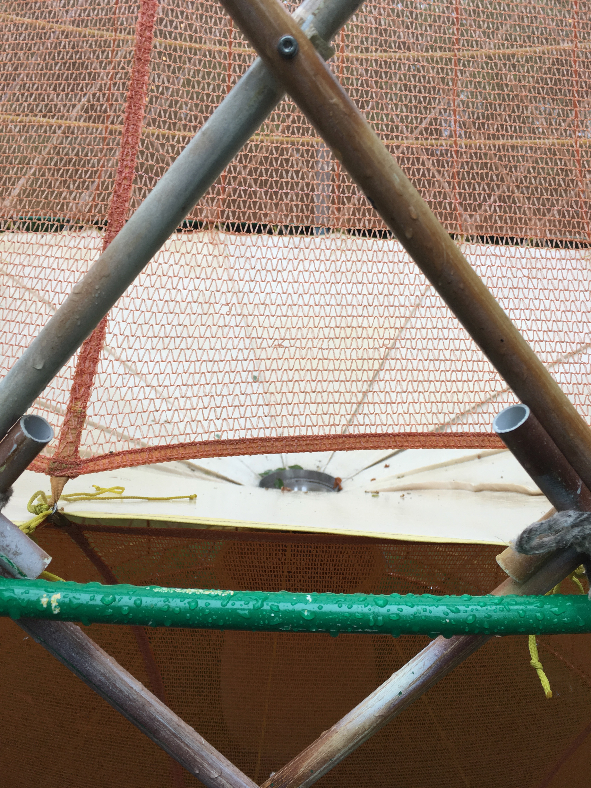
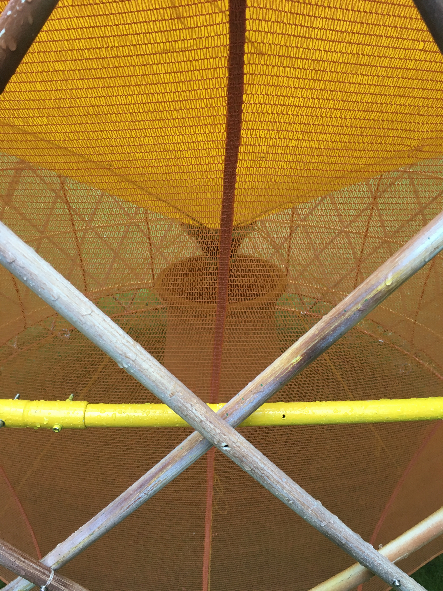
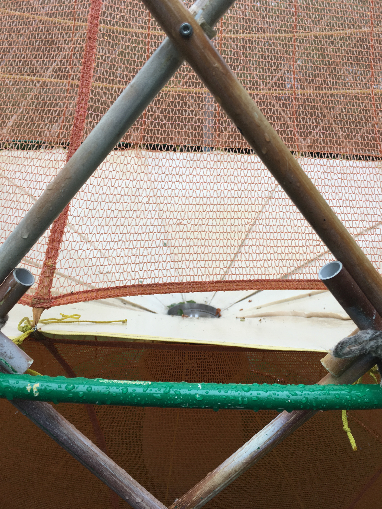

Wat is de Warke water, wat doet het en hoe werkt het?
Dit project is geinspireerd door voorbeelden uit de natuur. Bepaalde dieren en planten kunnen namelijk vocht uit de lucht omzetten in water. Hierbij maken ze gebruik van een unieke micro of nanostructuur. Hierdoor kunnen ze overleven onder zware omstandigheden. De Warka water structuur is ontworpen om drinkbaar water uit de lucht te verzamelen en te oogsten. Dit project wordt in landen en gebieden, zoals Ethiopië gebruikt als alternatieve waterbron waar gebrek aan drinkwater is. De structuur van de Warka water zorgt voor een sociale plek om mensen uit de omgeving te ontmoeten en bied een schaduwrijke ruimte. Hij is afhankelijk van zwaartekracht, condensatie, verdamping en bevat geen electriciteit. De Warka water kan beschreven worden als een fundamentele bron van leven. Het doel is uiteindelijk dat de Warka water 50 tot 100 liter per dag zal produceren.
Wat is nodig voor de Warka water?
Om de Warka water te maken heb je niet veel nodig. Op de website staat het volgende: "The tools needed to construct a Warka are basic and manual, such as a bamboo splitter, caliper, hammer, drill and a saw. No electrical machinery is needed." Het kan vervolgens door lokale bewoners binnen 1 dag in elkaar wordne gezet. 4 man is genoeg.
Waarom vind ik dit project interessant?
Ik vind het heel tof om te zien dat men met weinig geld en materiaal heel veel kan betekenen voor mensen in gebieden waar een tekort aan drinkwater is. 
 


